QUEST 02 · UX CASE STUDY
MBTI Community App
A personality-powered app that helps young adults in big cities find their people, and feel ready to actually show up.
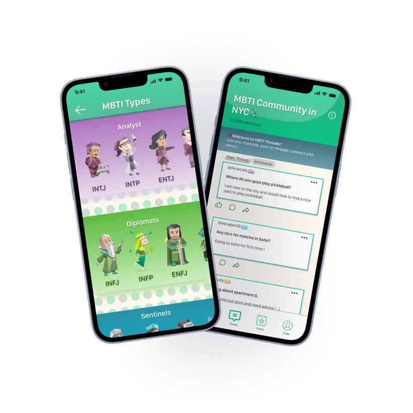
THE 60-SECOND VERSION
THE PROBLEM
Young adults new to a big city want friends, but one thing stops them: not knowing who will be in the room. So they browse events online and never go.
THE SOLUTION
A mobile app that uses self-identified MBTI as a shared language. Users start in low-pressure communities, see who is attending an event, and chat before they meet.
WHAT I DELIVERED
Problem statement, competitive analysis, 8 sketches, 8 storyboards, 4 personas, a storymap, a QOC design defense, paper prototypes, and mid-to-high fidelity digital prototypes.
1 · THE SPARK: THE PROBLEM
Even motivated people stay home when they can’t picture the room.
Young adults (ages 18–30) in cities like New York often feel lonely after moving or changing friend groups. Events and meetups exist, but they leave a key question unanswered: who will be there, and will I feel comfortable? That uncertainty hits hardest for people with social anxiety. Many get stuck browsing without ever showing up.
THE SOLUTION
I created an MBTI app to help young adults in big cities like New York City discover communities and meet compatible peers in both online and in-person settings. Among younger populations, MBTI is widely used not as a scientific classification, but as a shared language for self-expression and interpersonal understanding.
WHAT IS MBTI?
MBTI is a personality framework that categorizes individuals into 16 personality types based on four dimensions. While MBTI is not considered a scientifically rigorous measure of personality, it is widely used among younger populations as a shared identity for self-expression and interpersonal understanding, creating sense of community within each personalities. In this app, MBTI is used as a social tool to help users communicate preferences, reduce uncertainty, and facilitate initial connections. The platform provides personality-based community server, community threads, and in-person events.
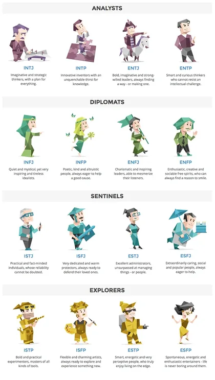
THE COMPETITIVE LANDSCAPE
I compared the four places my audience already looks for community. Each one does something well, and each leaves the same gap.
BUMBLE BFF
Does well: friend-focused, location-based, familiar swipe UI.
Gap: one-to-one only, which raises anxiety, and profiles show photos, not personality.
MEETUP
Does well: local events across many interests.
Gap: no insight into who is attending. It assumes you’ll show up with confidence.
DISCORD SERVERS
Does well: identity-based communities with low social stakes and anonymity.
Gap: not tied to a place, so comfort online rarely turns into real-world plans. Moderation varies.
FACEBOOK EVENTS
Does well: many local gatherings and friends-attending social proof.
Gap: built around logistics, not comfort. Too many options can freeze people.
2 · WHO I DESIGNED FOR
Three personas represent people in a social transition. A fourth, an anti-persona, shows me who the app is not for.
EMMA SMITH · INFP
23, graphic designer, New York
Wants: a close circle she can rely on.
Struggles: feels invisible in big groups and overthinks being “too quiet.”
Needs: signs that others are open to connecting, and time to prepare mentally.
ALEX RIVERA · ENFP
26, marketing analyst, Los Angeles
Wants: to rebuild a diverse circle and host hobby-based gatherings.
Struggles: surface-level chats, and being the only one who organizes.
Needs: tools to facilitate group hangouts and meet different kinds of people.
MINJI PARK · INFJ
20, international student, Boston
Wants: a small, supportive circle and confidence starting conversations in English.
Struggles: cultural barriers and fear of misreading social cues.
Needs: clear social-style expectations, introvert-friendly labels, and warm-up time.
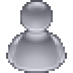
HAL THOMPSON · ESTJ (ANTI-PERSONA)
68, retired teacher, New York
Happy with his lifelong circle, and technology isn’t part of his social life. He doesn’t want to meet new people online.
Why he matters: he keeps the scope honest. This app is for people actively seeking new connections.
STORYMAPPING: THE JOURNEY BEFORE ANY SKETCH
I mapped six stages of the experience first, so every feature would answer a real moment in the journey.
ONBOARDING
- Creates a profile
- Selects MBTI type
- Reads community guidelines
SETTING PREFERENCES
- Selects their city
- Takes a compatibility quiz
- Verifies they’re a real person
EXPLORING COMMUNITIES
- Looks for an “introverted” community
- Sees the MBTI mix of active users
- Filters servers and events by activity
PREPARING TO MEET
- Reviews participants
- Gets ice breakers in the chat
- Double-checks the event is verified
ATTENDING
- Observes conversations first
- Joins ice breaker activities
- Greets other participants
CREATING A COMMUNITY
- Befriends other users
- Plans the next event with the same group
- Rates the event’s safety
3 · THINKING WIDE BEFORE NARROWING
8 CRAZY EIGHTS SKETCHES
I sketched eight fast, rough ideas to get past the obvious first answer. They ranged from chats that turn into real meetups, to moderators and assigned hangout leaders, to identity verification with no profile photos for safety.
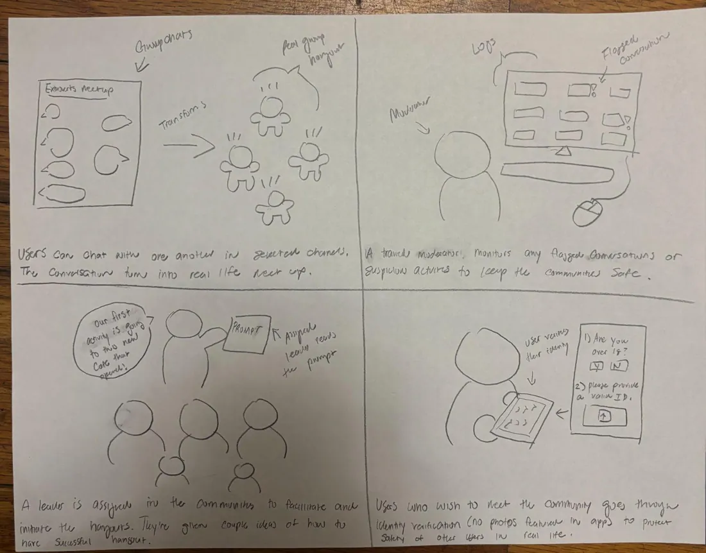
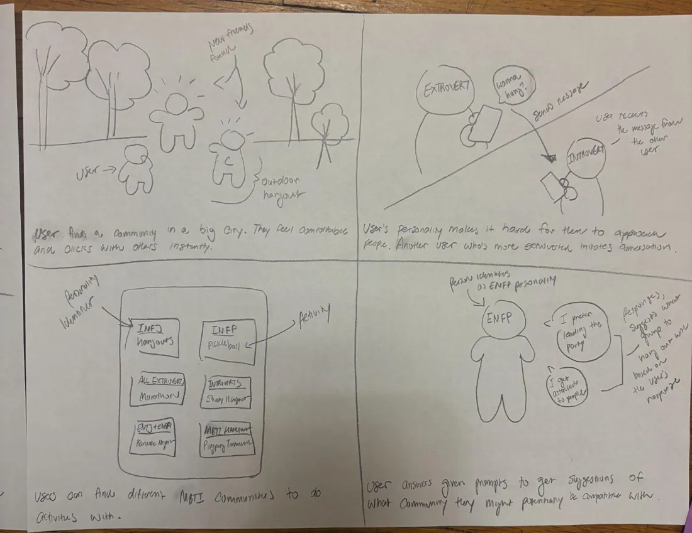
8 STORYBOARDS
Next I turned eight ideas into five-panel stories: Finding Community, Personality Match-up, Expanding MBTI Communities, Personality Matching, Chatroom, Assigned Leader, Identity Verification, and Server Moderator.
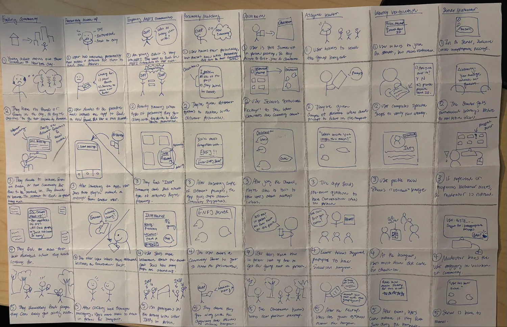
4 · THE TURNING POINT: DESIGN DEFENSE WITH QOC
I narrowed eight ideas into three feature approaches, then used Questions, Options, Criteria to choose between them with reasons I could defend.
OPTION 1 · BROWSE BY PERSONALITY
Users pick an MBTI at onboarding, enter communities by type, and see attendees’ types before joining an event.
My rationale: grouping by type reduces uncertainty and supports identity expression. Risk: strict grouping may reinforce stereotypes.
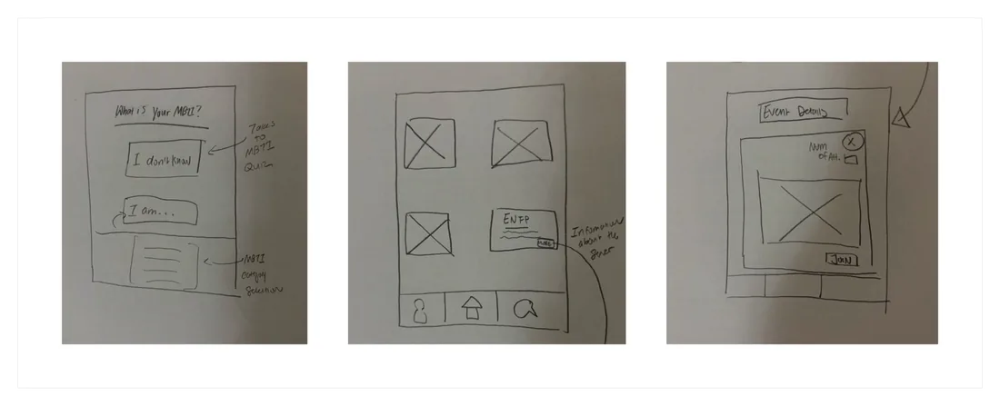
OPTION 2 · BROWSE BY ACTIVITY
Users browse coffee meetups, hikes, and game nights without registering. Attendee MBTI details appear after tapping an event.
My rationale: familiar, and it mixes personalities. Risk: users stay uncertain until they open each event.
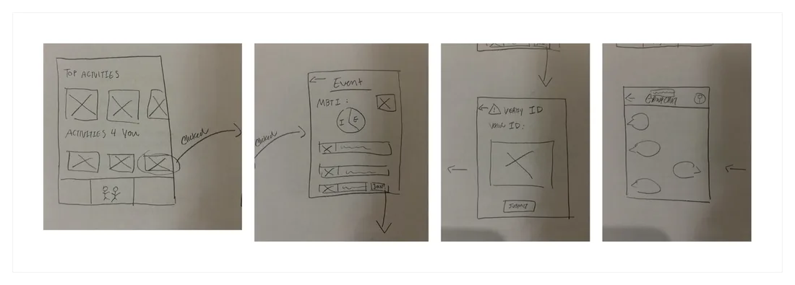
OPTION 3 · PERSONALIZED PICKS
Users share MBTI and comfort preferences, then get recommended events with a compatibility indicator and attendee mix.
My rationale: less searching and clearer expectations. Risk: algorithmic picks reduce transparency.
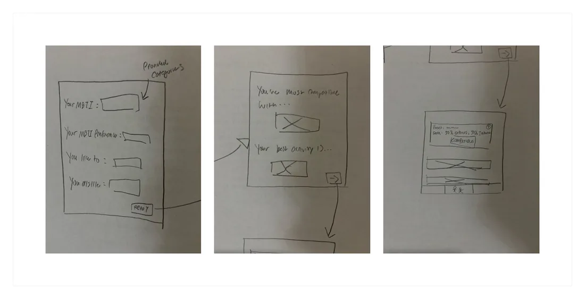
WEIGHING THE OPTIONS
I scored each option against four criteria, based on the rationale I wrote for each one.
| CRITERIA | OPTION 1: PERSONALITY | OPTION 2: ACTIVITY | OPTION 3: PICKS |
|---|---|---|---|
| Reduces “who will be there?” uncertainty | ✔ STRONG A predictable crowd. | ◐ PARTIAL Personality shows only after opening an event. | ✔ STRONG Compatibility sets expectations up front. |
| Encourages diverse interactions | ⚠ RISK Can reinforce stereotypes. | ✔ STRONG Activity-first mixes personalities. | – NEUTRAL Depends on how matches are made. |
| Keeps users in control of exploring | ✔ STRONG Browse communities and attendees freely. | ✔ STRONG Browse without registering. | ⚠ RISK Algorithms can hide the options. |
| Low effort to find something | – NEUTRAL Needs an MBTI choice first. | ✔ STRONG Familiar activity listings. | ✔ STRONG Replaces manual searching. |
5 · FROM PAPER TO PIXELS
PAPER PROTOTYPE
Before designing anything digitally, I first created a paper prototype to test with relevant stakeholders early in the process, before finalizing the design. This was central to understand my potential users and see any risks or receive resistance and for what reasons.
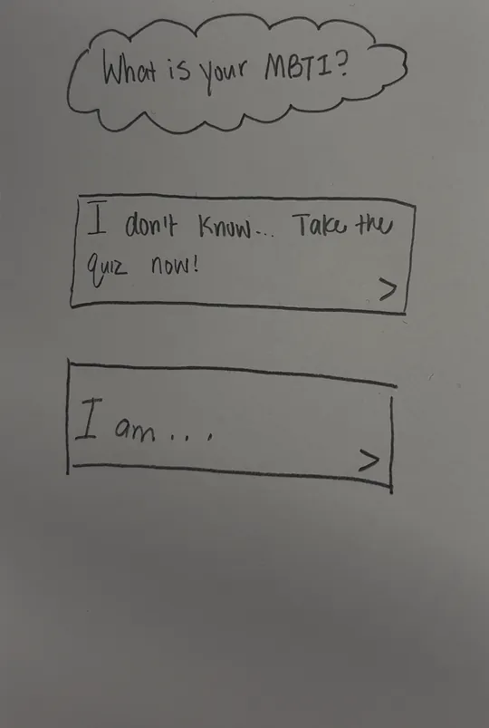
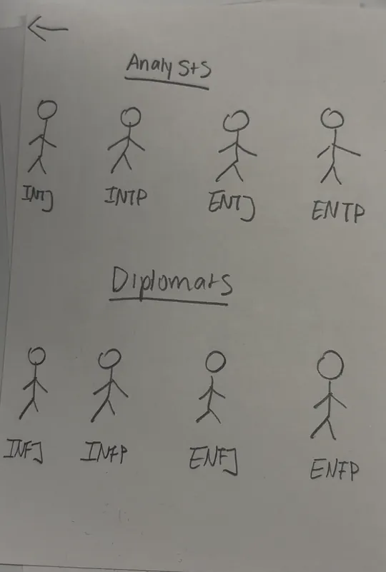
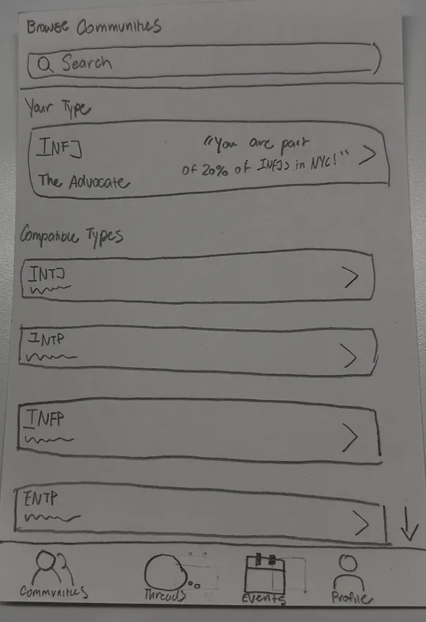
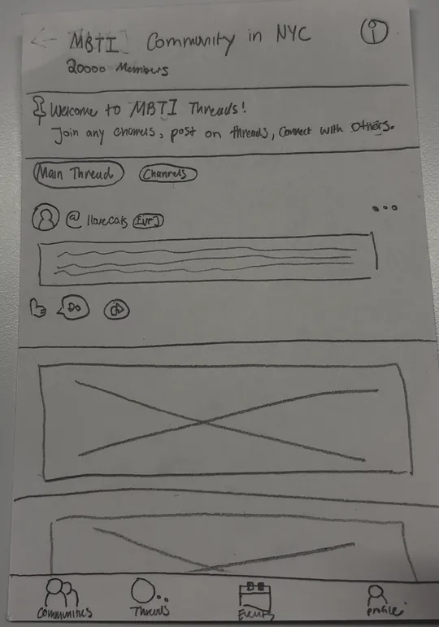
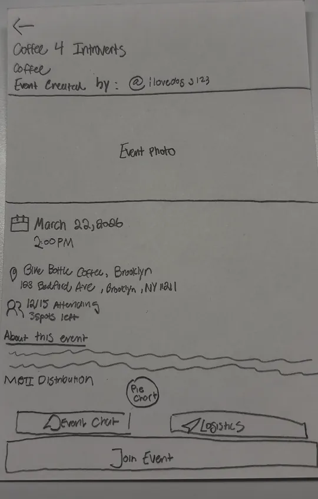
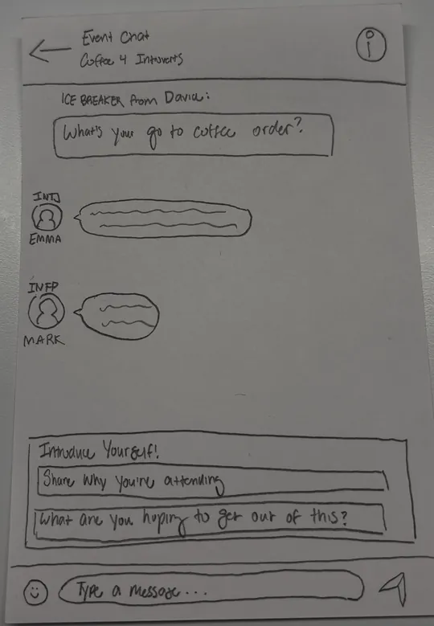
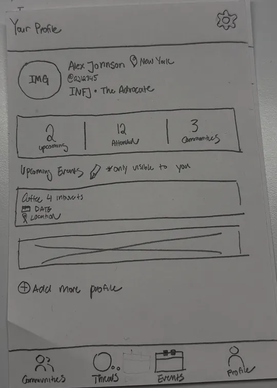
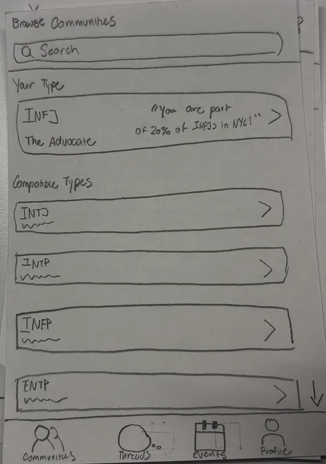
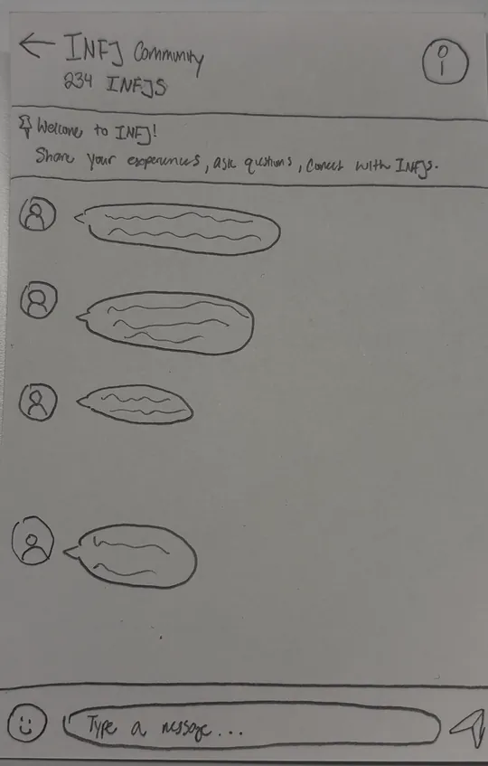
I combined parts of the three feature approaches. This version focused on how users discover communities, join activities, and represent their identity while staying anonymous.
What feedback exposed: navigation was confusing and the feature structure was unclear. What I changed: I split “threads” and “communities” into separate sections of the navigation bar, so each feature is easy to find and neither competes for attention. I also reworded buttons and labels so each one says what it does.
DIGITAL LO-FI: STRUCTURE FIRST
I rebuilt the flow in Figma as gray-box wireframes, with ten core screens plus variations, so structure could be judged without color or style.
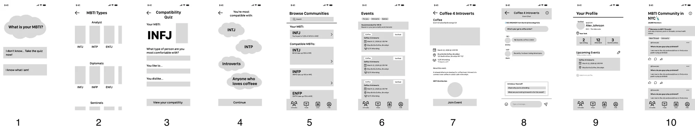
6 · TRY THE PROTOTYPE
Press play to watch it. The animation starts paused.
BROWSING COMMUNITIES
A bottom navigation bar connects the four core features: Communities (anonymous MBTI chat servers), Threads (posts about your type or your city), Events (meetups in your city), and Profile (settings, upcoming and past events).
7 · HI-FI WIREFRAMES AND DESIGN DECISIONS
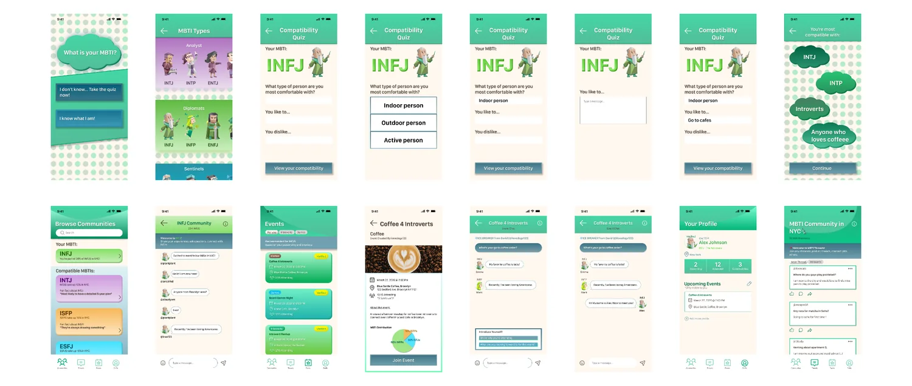
DECISION 1 · SEPARATE THREADS FROM COMMUNITY CHAT
At first, threads and community chat were combined into one space, which caused some confusion. Splitting them gives each a distinct purpose: use Threads for public, city-wide discussions, and Community Chat for real-time conversation with people like you.
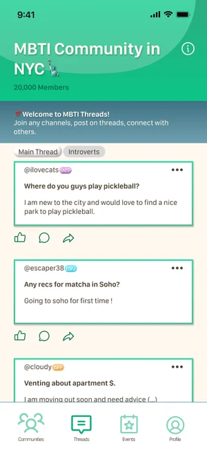
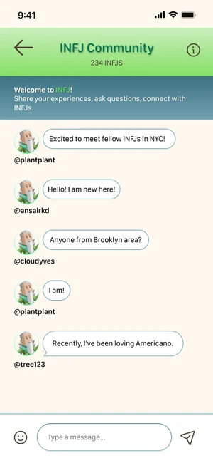
DECISION 2 · BROWSE BY PERSONALITY AND BY ACTIVITY
Users get more choice, and the app doesn’t depend on personality alone. Communities show how common each type is in the city, and events can be filtered by type or activity, like coffee or games.
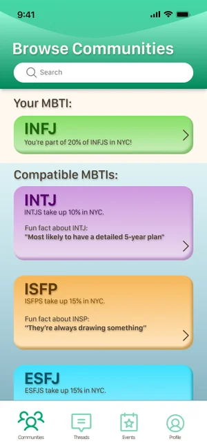
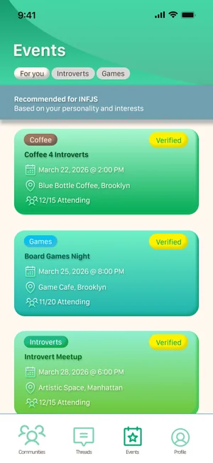
DECISION 3 · ANONYMOUS TO START, REAL IDENTITY TO MEET
Anonymous profiles in chats and threads lower social pressure. Real, verified identity at in-person events builds trust and safety. Users move at their own pace from online to offline.
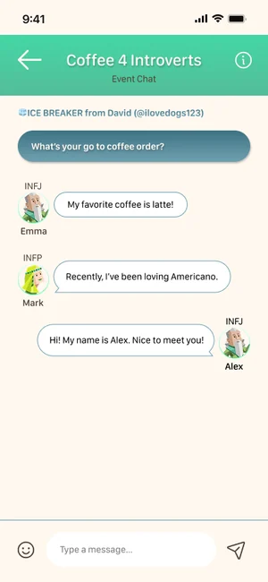
DECISION 4 · A GUIDED ONBOARDING
Users pick their MBTI or discover it with a short quiz. Follow-up preference questions generate recommendations that match their social comfort level.
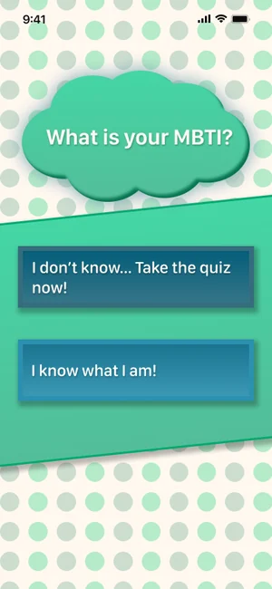
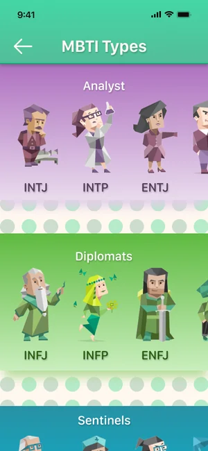
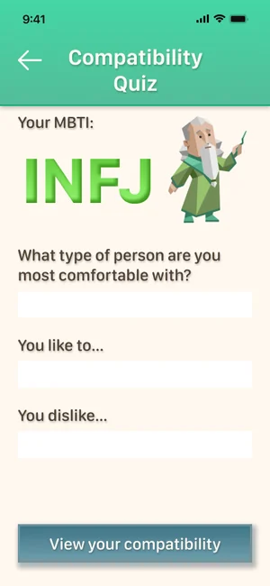
8 · WHAT THE TRADE-OFFS TAUGHT ME
STRUCTURE VS. FLEXIBILITY
Personality browsing calms anxious users, while activity browsing keeps people mixing. I needed both, so I stopped looking for one winning idea.
ANONYMITY VS. SAFETY
Anonymity makes it easy to start talking. Verified identity makes meeting safe. Separating the two contexts avoided a compromise that served neither.
PERSONALIZATION VS. TRANSPARENCY
Recommendations save effort, but hidden algorithms hide choices. I kept browsing visible alongside the personalized picks.
MBTI AS A TOOL, NOT A TRUTH
MBTI isn’t scientifically rigorous, but it is a shared language for many young adults. I designed it as a flexible starting point for exploring, not a fixed label.
IMPACT, AND WHAT’S NEXT
By reducing uncertainty and giving people a gradual path from browsing to attending, the app could help young adults build real connections and ease loneliness in dense cities.
SAFETY SYSTEMS
Build the moderation and safety monitoring I only sketched. Verified badges are a start, not the full answer.
SMARTER RECOMMENDATIONS
Replace my simplified logic with one that learns from behavior, preferences, and feedback over time.
RICHER INTERACTIONS
Prototype the small moments, like filters and dropdowns, so the whole experience can be tested.